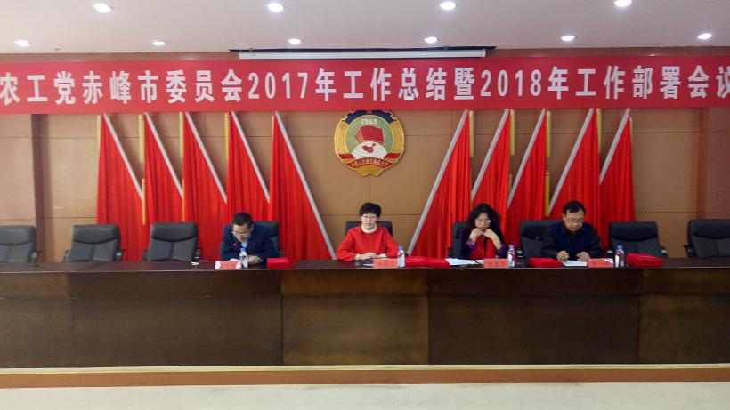
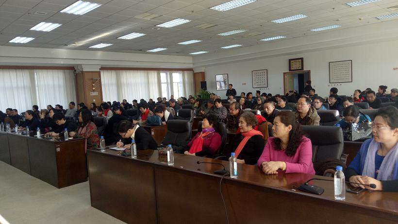
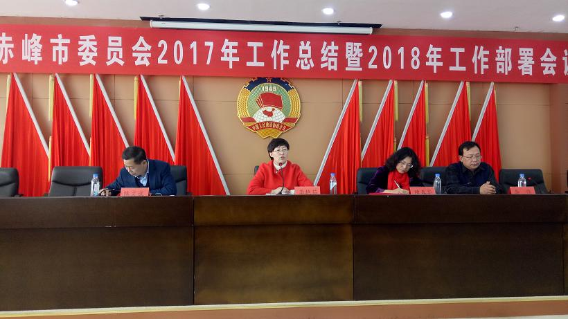
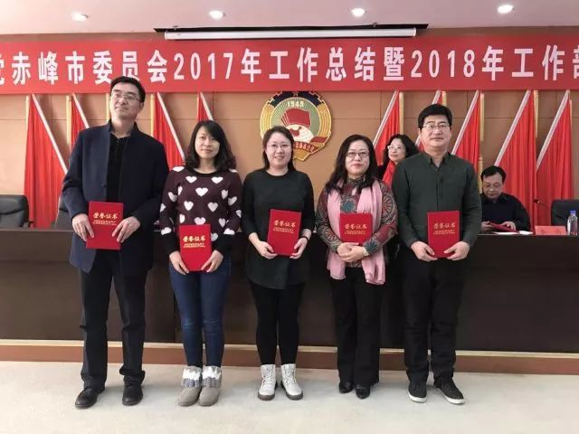
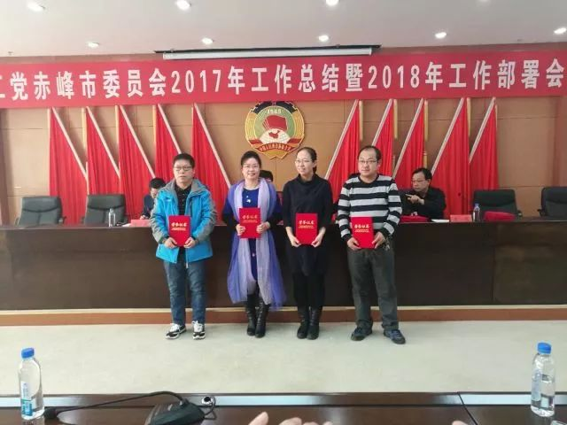
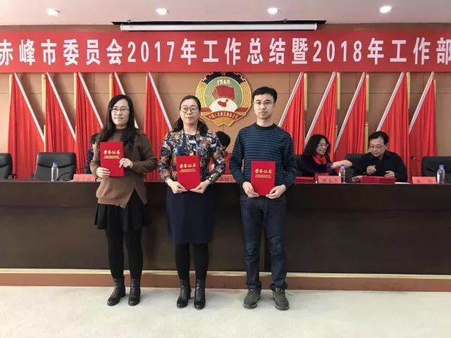
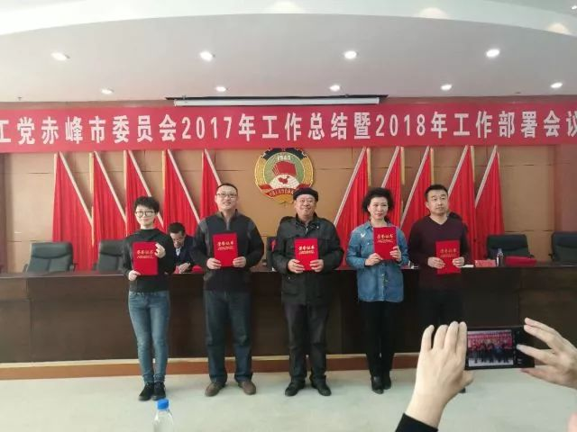

2018年1月14日，农工党赤峰市委召开2017年工作总结暨2018年工作部署会议，农工党赤峰市委主委、赤峰市政府副市长李艳茹出席会议，农工党赤峰市委副主委陈文武主持会议，110余名党员参加会议。


会议对2017年工作进行总结，部署了2018年主要工作：一是认真学习宣传贯彻落实中共十九大精神，做好上级文件的传达、学习、贯彻工作；二是深入实施“人才强党”战略，全面推进组织建设，坚持用好存量，培育增量；三是紧紧围绕“健康中国”“美丽中国”两条主线，再创社会服务工作新佳绩；四是围绕中共赤峰市委、赤峰市政府的中心工作做好参政议政工作。

李艳茹主委对市委会2017年取得的成绩给予充分肯定。她指出，2017年规定动作不走样，自选动作有创新，这些成绩的取得，得益于广大党员的辛勤付出，更凝聚着大家的智慧和汗水。希望大家在2018年工作中继续发扬团结、进步、进取的精神，将各项工作做的更好。
 
 
李艳茹要求，一要讲政治。作为参政党要找准自己的位置，坚持中国特色社会主义道路自信、理论自信、制度自信、文化自信，与中共同频同震；在言行表达上，与中共中央保持高度一致，对于任何问题发表建议时要在注意倾听民意、调查研究、找专家论证的基础上发声，做到慎言慎行。二要有作为。人生的过程就是积累的过程，任何一个成功人士的背后都付出了比常人更加艰辛的努力！大家要通过不断学习和努力提升自己，不虚度一生，不辜负一生，通过今天的努力把握自己人生的未来。
会上还对23名优秀党员进行了表彰。